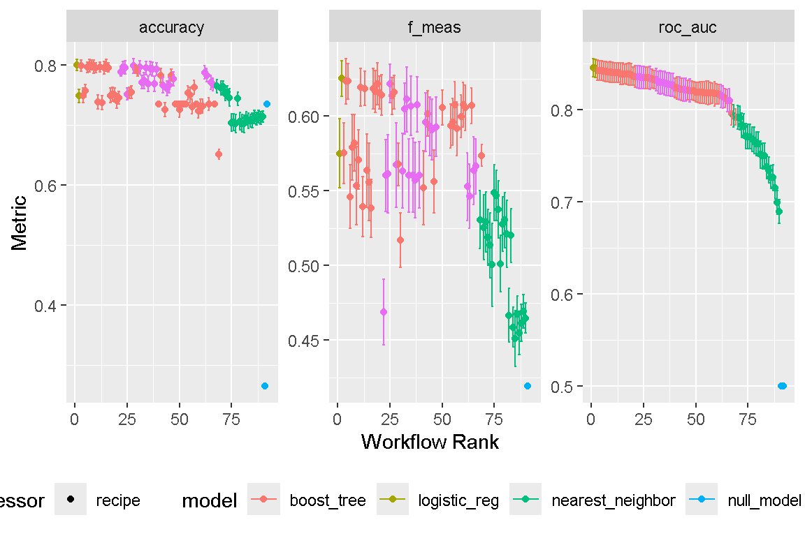
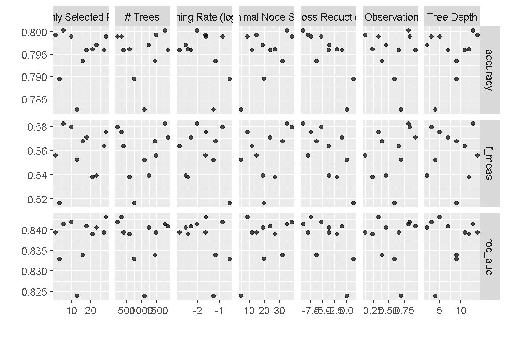
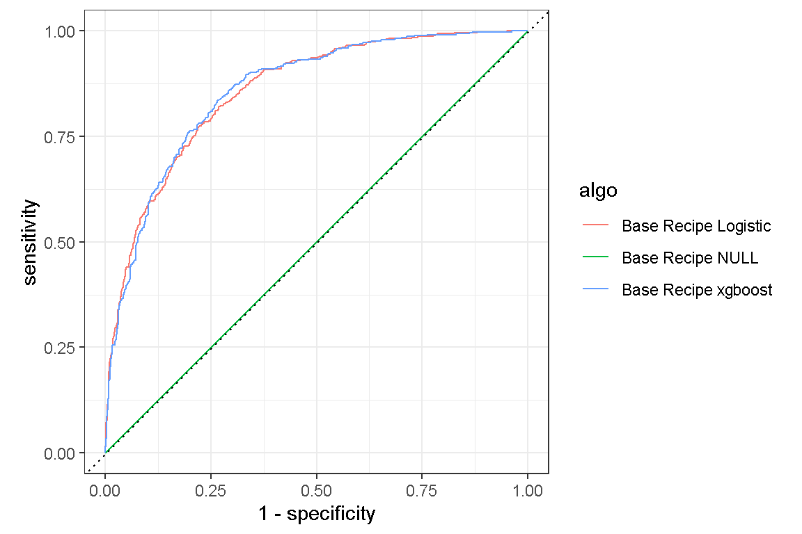
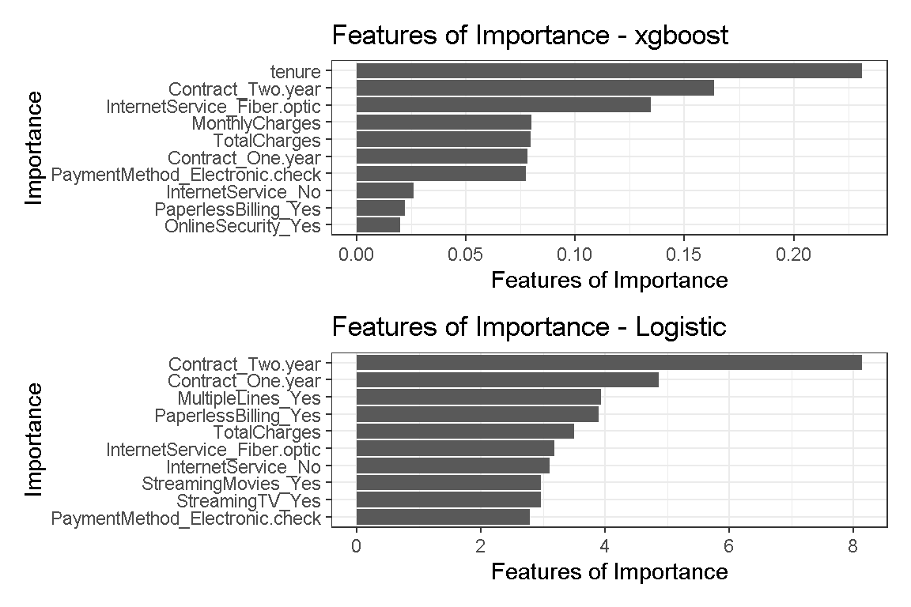

This short exercise was assigned as homework. Let’s practice my ML skills and try and predict customer attrition from this dataset.
This dataset was assigned to us as homework by Prof Roh. Let’s use it to refine my ML skills. I will make use of workflowsets to tune 4 models: random forest, xgboost, knn, and lightgbm. Thereafter, I will select the best model for further fine-tuning using tune_sim_anneal from the finetune package. This should be exciting!
Let’s begin by importing the necessary packages and data.
rm(list=ls())
pacman::p_load("tidyverse", #for tidy data science practice
"tidymodels", "workflows", "finetune", "themis", "embed", "butcher",# for tidy machine learning
"pacman", #package manager
"devtools", #developer tools
"Hmisc", "skimr", "broom", "modelr",#for EDA
"jtools", "huxtable", "interactions", # for EDA
"ggthemes", "ggstatsplot", "GGally",
"scales", "gridExtra", "patchwork", "ggalt", "vip",
"ggstance", "ggfortify", # for ggplot
"DT", "plotly", #interactive Data Viz
# Lets install some ML related packages that will help tidymodels::
"usemodels", "poissonreg", "agua", "sparklyr", "dials", "bonsai",#load computational engines
"doParallel", # for parallel processing (speedy computation)
"ranger", "xgboost", "glmnet", "kknn", "earth", "klaR", "discrim", "naivebayes", "baguette", "kernlab", "lightgbm",#random forest
"janitor", "lubridate")
load("customer_attrition.RData")Import the data and get them into the correct class. Note there there are missing values in TotalCharges, which we will impute as a recipe step. There is also some class imbalance, so we will use strata = Attrition when splitting the data, as well as address it as a recipe step using step_upsampling.
# import data
set.seed(2024030701)
data <- read_csv("https://www.talktoroh.com/s/attrition_classification.csv")
# check missing data
table(is.na(data))
skim(data)
# check imbalance
data %>% count(Attrition) %>% mutate(prop = n/sum(n)) # there is some class imbalance
# get variables into correct class
data <-
data %>%
mutate_if(is.character, as.factor) %>%
mutate(SeniorCitizen = as.factor(SeniorCitizen),
Attrition = fct_relevel(Attrition, "Yes"),
)Split the data into train and test sets, and create folds for resampling.
# split the data
set.seed(2024030702)
data_split <-
data %>%
initial_split(strata = Attrition)
data_train <-
data_split %>%
training()
data_test <-
data_split %>%
testing()
data_fold <-
data_train %>%
vfold_cv(v = 10, strata = Attrition)I created 2 recipes to be evaluated, a base recipe without upsampling, and another with step_upsample.
# create recipes
rec_base <-
recipes::recipe(formula = Attrition ~.,
data = data_train) %>%
update_role(customerID, new_role = "id") %>%
step_zv(all_predictors()) %>% # remove zero variance
step_impute_knn(TotalCharges) %>%
step_YeoJohnson(all_numeric_predictors()) %>%
step_normalize(all_numeric_predictors()) %>%
step_dummy(all_nominal_predictors())
rec_upsample <-
recipes::recipe(formula = Attrition ~.,
data = data_train) %>%
update_role(customerID, new_role = "id") %>%
step_zv(all_predictors()) %>% # remove zero variance
step_impute_knn(TotalCharges) %>%
step_upsample(Attrition) %>%
step_YeoJohnson(all_numeric_predictors()) %>%
step_normalize(all_numeric_predictors()) %>%
step_dummy(all_nominal_predictors())Let’s build some models. Remember to set the model to classification
#build models
# random forest
rf_spec <-
rand_forest() %>%
set_engine("ranger",
importance = "impurity") %>%
set_mode("classification") %>%
set_args(trees = tune(),
mtry = tune(),
min_n = tune())
# xgboost
xgb_spec <-
boost_tree() %>%
set_engine("xgboost") %>%
set_mode("classification") %>%
set_args(trees = tune(),
tree_depth = tune(),
min_n = tune(),
loss_reduction = tune(),
sample_size = tune(),
mtry = tune(),
learn_rate = tune(),
stop_iter = 10)
# knn
knn_spec <-
nearest_neighbor() %>%
set_engine("kknn") %>%
set_mode("classification") %>%
set_args(neighbors = tune(),
weight_func = "optimal",
dist_power = tune())
#lightgbm
lgb_spec <-
boost_tree(trees = tune(), min_n = tune(), tree_depth = tune(),
learn_rate = tune(), stop_iter = 10) %>%
set_engine("lightgbm") %>%
set_mode("classification")
# Logistic Regression Model
logistic_spec <-
logistic_reg() %>%
set_engine(engine = 'glm') %>%
set_mode('classification')
null_spec <-
null_model() %>%
set_mode("classification") %>%
set_engine("parsnip")workflowsetWith workflowset, its super convenient to evaluate multiple recipes and models in one step.
tune_gridAre you ready to tune hyper-parameters? I hope my laptop doesn’t crash! Since the dataset is small, and we’re only tuning 12 recipe-model combinations, I will use tune_grid rather than tune_race_anova.
# tune_grid
set.seed(2024030703)
doParallel::registerDoParallel(cl=3, cores = 6)
first_tune_results <-
workflow_map(base_set,
fn = "tune_grid",
verbose = TRUE,
seed = 2024030703,
grid = 11,
resamples = data_fold,
metrics = metric_set(roc_auc, accuracy, f_meas),
control = control_grid(verbose = TRUE,
allow_par = TRUE,
parallel_over = "everything"))Let’s take a look at the results. Any guesses for which model performed best?
first_tune_results %>%
autoplot("roc_auc") +
theme(legend.position = "bottom")
first_tune_results %>%
workflowsets::rank_results(rank_metric = "roc_auc") %>%
filter(.metric == "roc_auc") %>%
dplyr::select(wflow_id, mean, std_err, rank) %>%
datatable() %>%
formatRound(columns = c("mean", "std_err"),
digits = 3)I am surprised indeed, a simple Logistic Regression model performed the best, followed by xgboost. Upsampling did not appear to improve model performance. Let’s see if we can further finetune the xgboost model to improve its results.
Let’s see if we can further improve on the xgboost model by fine-tuning hyper-parameters even further. I start by examining the hyper-parameters.
first_tune_results %>%
extract_workflow_set_result("base_recipe_xgboost") %>%
autoplot()
grid_latin_hypercubeLet’s define better ranges for each hyper-parameter to be tuned. I will also use grid_latin_hypercube to create a better “space-filling” grid.
# xgboost wflow
xgboost_wflow <-
workflow() %>%
add_model(xgb_spec) %>%
add_recipe(rec_base)
param <-
xgboost_wflow %>%
extract_parameter_set_dials() %>%
finalize(data_train) %>%
update(mtry = mtry(c(20L,30L)),
trees = trees(c(300L,2000L)),
min_n = min_n(c(30L,50L)),
tree_depth = tree_depth(c(5L,8L)),
learn_rate = learn_rate(c(-2.2,-1.5)),
loss_reduction = loss_reduction(c(-10.1,-6.1))
)
set.seed(2024030704)
doParallel::registerDoParallel(cl=3, cores = 6)
grid_xgboost <- grid_latin_hypercube(param, size = 50)
xgboost_tune_grid <-
tune_grid(
object = xgboost_wflow,
resamples = data_fold,
metrics = xgboost_metrics,
grid = grid_xgboost,
control = control_grid(verbose = TRUE)
)
xgboost_tune_grid %>%
collect_metrics() %>%
filter(.metric == "roc_auc") %>%
arrange(-mean)I managed to marginally improve xgboost model performance from 0.843 to a roc_auc score of 0.845, which is still behind the logistic model.
funetune using simulated annealing with tune_sim_annealLet’s see if simulated annealing using tune_sim_anneal can improve roc_auc further. We can use the results from tune_grid as initial values.
set.seed(2024030704)
doParallel::registerDoParallel(cl=3, cores = 6)
xgboost_sim_anneal_result <-
tune_sim_anneal(
object = xgboost_wflow,
resamples = data_fold,
iter = 100,
initial = xgboost_tune_grid,
metrics = xgboost_metrics,
param_info = param,
control = control_sim_anneal(verbose = TRUE,
verbose_iter = TRUE,
no_improve = 20L,
allow_par = TRUE,
restart = 10L,
parallel_over = "everything")
)
xgboost_sim_anneal_result %>%
collect_metrics() %>%
filter(.metric == "roc_auc") %>%
arrange(-mean)Nope, there was no imporvement, we are still stuck on 0.845. Let’s extract this set of hyper-parameters.
xgboost_param <-
xgboost_sim_anneal_result %>%
select_best(metric = "roc_auc")Let’s fit both models and use them to predict on the test data, and assess model performance.
# finalize workflow
xgboost_tune_wflow <-
xgboost_wflow %>%
finalize_workflow(xgboost_param)
# last fit
xgboost_final_fit <-
xgboost_tune_wflow %>%
last_fit(data_split)
logistic_final_fit <-
workflow() %>%
add_model(logistic_spec) %>%
add_recipe(rec_base) %>%
last_fit(data_split)
NULL_final_fit <-
workflow() %>%
add_model(null_spec) %>%
add_recipe(rec_base) %>%
last_fit(data_split)Let’s collect the results metrics.
metrics_xgboost <-
xgboost_final_fit %>%
collect_metrics() %>%
mutate(algo = "Base Recipe xgboost")
metrics_logistic <-
logistic_final_fit %>%
collect_metrics() %>%
mutate(algo = "Base Recipe Logistic")
metrics_NULL <-
NULL_final_fit %>%
collect_metrics() %>%
mutate(algo = "Base Recipe NULL")
metrics_all <-
bind_rows(metrics_xgboost, metrics_logistic, metrics_NULL) %>%
pivot_wider(names_from = ".metric",
values_from = ".estimate") %>%
dplyr::select(-.estimator, -.config)Interestingly, although the Logistic Regression model performed better on the training data, xgboost was able to trump it on the test data. In this case, both models performed better on the test data. Let’s collect predictions and plot an roc_auc curve.
pred_xgboost <-
xgboost_final_fit %>%
collect_predictions() %>%
mutate(algo = "Base Recipe xgboost")
pred_logistic <-
logistic_final_fit %>%
collect_predictions() %>%
mutate(algo = "Base Recipe Logistic")
pred_NULL <-
NULL_final_fit %>%
collect_predictions() %>%
mutate(algo = "Base Recipe NULL")
pred_all <-
bind_rows(pred_xgboost, pred_logistic, pred_NULL) pred_all %>%
group_by(algo) %>%
roc_curve(Attrition,
.pred_Yes) %>%
autoplot()
We can also visualize features by importance.
vipplot_xgboost <-
xgboost_final_fit %>%
extract_fit_parsnip() %>%
vip(geom = "col",
num_features = 10L) +
labs(x = "Importance",
y = "Features of Importance",
title = "Features of Importance - xgboost") +
theme_bw()
vipplot_logistic <-
logistic_final_fit %>%
extract_fit_parsnip() %>%
vip(geom = "col",
num_features = 10L) +
labs(x = "Importance",
y = "Features of Importance",
title = "Features of Importance - Logistic") +
theme_bw()vipplot_xgboost + vipplot_logistic + plot_layout(nrow = 2)